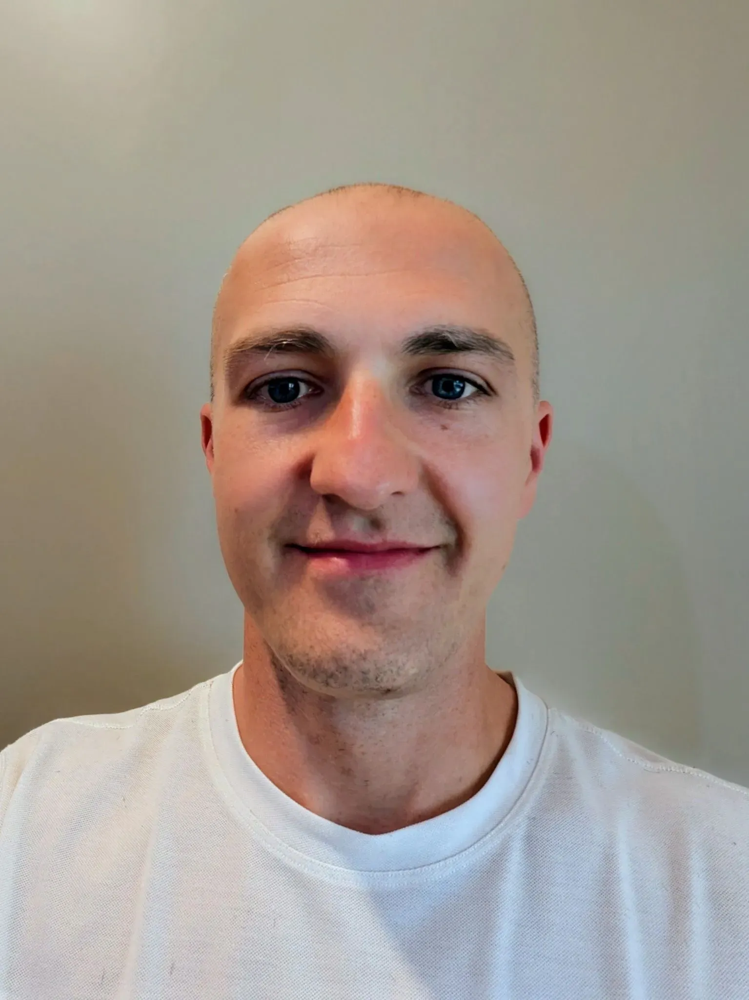

Know what your customers actually want. In 2 weeks.
Done-for-you customer discovery interviews for founders. You get the insights. You don’t do the work.
Book a free 20-min fit call See pricingThe problem it solves
You know you should be talking to customers. But recruiting takes weeks, the interviews eat your calendar, and the notes sit unsynthesized. So big decisions get made on gut feel.
What you get
- 8 structured 30-minute discovery interviews with your target customers
- Recruiting, screening, and scheduling handled for you
- A synthesis report — themes, verbatim quotes, opportunity areas, in plain English, ready to act on
- A 30-minute readout call to walk through what it means for your roadmap
How it works
- Kickoff (30 min)We define who to talk to and what you need to learn.
- We run itInterviews recruited, scheduled, and conducted over two weeks.
- Day 14You get the report and the readout call.
Pricing
Sprint
You provide the customer list. I handle outreach, interviews, and synthesis. Founding rate for the first 3 founders.
Sprint+
No list? No problem. I recruit participants for you — screener, sourcing, and scheduling included. Founding rate for the first 3 founders.
Participant incentives are billed at cost (typically $50–75 each) and capped in your quote — no surprises.

Run by a researcher, not a robot
I’m Tony Alongi, a UX researcher with 12 years of discovery interviews across health tech and digital products. AI-assisted, researcher-led: every interview is run by a human who knows how to follow the thread — the part AI moderators still can’t do.
Stop guessing. Start knowing.
Free 20-minute fit call — we’ll figure out in one conversation whether a sprint makes sense for where you are.
Book your fit call